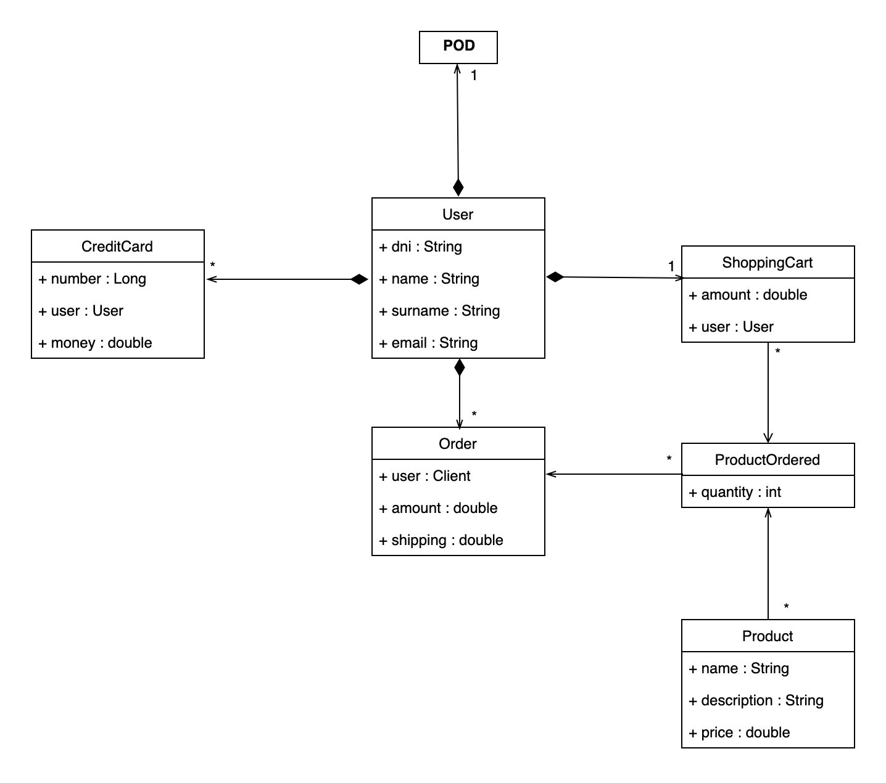

1. Introduction and Goals
Decentraliced Delivery or DeDe is a new, decentralized, and open-source delivery system. Based on the Solid Priciples for privacy and security. This application is designed for:
-
Having a virtual shop that can be accessed by anyone
-
Delviering the products to the customers
-
Providing a secure and private data management system
1.1. Requirements Overview
Here is a list of the functional and non-functional requirements that the application will support.
-
Functional Requirements
-
The user can select the products he wants to order or buy
-
The system will calculate the shipping costs through the address stored in the user’s pod
-
The application will calculate the final prices of the purchase and register the event to start shipping
-
The system will allow the user to check their orders placed
-
-
Non-Functional Requirements
-
System must support SOLID
-
1.2. Quality Goals
| Objetive | Motivation | Priority |
|---|---|---|
Privacity |
The application will guarantee a high level of privacy and security, respecting the personal information of users |
1 |
Usabilty |
The graphical interface of the application must not transmit doubts of use to the users. It should be easy to understand for novice users |
2 |
Efficiency |
The charging times between windows should be as low as possible so as not to upset the user |
3 |
Availability |
The application has to be constantly running. If a problem occurs, maintenance times should be as short as possible |
4 |
Testability |
Failures during program execution will be minimized |
5 |
1.3. Stakeholders
| Role/Name | Contact | Expectations |
|---|---|---|
Client |
Teachers. They evaluate the project |
They check that the project meets the expectations of the subject in addition to its proper functioning |
Users |
They use the application |
They are the users who are interested in using the application |
Developers |
Team in charge of developing and testing the project (dedeportes) |
They create the project from the skeleton iteratively. They are responsible for making the application functional and secure |
2. Architecture Constraints
2.1. Technical Constraints
Constraint |
Motivation |
TypeScript |
Is the language that will be used in the project |
React |
Is the library that help us to make the GUI |
SOLID |
Help us to follow a descentralized management of the user data |
POD |
Stores the user data and restricts its use unless the user wants to share it |
2.2. Organizational Constraints
Constraint |
Explanation |
Time |
The project will be finish until the 25th of april |
Experience |
1 out of 5 has some experience on Solid and the development of this kind of projects |
Team |
The team is composed by 5 members. Each one has his own projects apart from this one so it could be hard to organize a meeting |
Data |
The products and the orders will be stored in the Database. The users data will be stored in PODs that will be connected to the app to get the shipping address |
Version Control |
All changes are going to be commited in GitHub in different branches. The master branch is where the non-error application is going to be and the develop branch is where the team is going to work creating from it the different branches that will be needed |
2.3. Conventions
Constraint |
Details |
Language |
The language used for the entire documentation and project will be english |
Documentation |
The documentation is going to follow the arc42 structure |
Control Version |
The developement of the application will be controled by git version control on the platform GitHub |
3. System Scope and Context
The main objetive of DeDeportes is to create a sports store with products related to sports. The application that conatins the online store is going to be descentralized and also be based on Solid so each client will have its own POD. This POD stores the users information and it cannot be acceded unless the user authorized it. The most frequent user of this appplication is going to be the client interested in sport products.
3.1. Business Context
Element |
Input |
Output |
User |
Recipe |
Products that the client want |
POD |
User info |
Shipping Address |
Database |
Client order |
Products |
App (DeDeportes) |
Order/Products |
Recipe/Client Order |

First of all the client should sign in the POD sending his information. Then he can pick up products to make the order, once he ended the POD send the shipping address to make the full order and it´s send to the database for a future send. The product info are given to the application by the database.
3.2. Technical Context
Technology |
Description of usage |
SOLID architecture |
Is used for the secure management of the user data furthermore this data is decentralized |
POD |
Where the application is going to take the user data, if he allows it. POD stores the user information. |
TypeScript |
Is the language used to generate the events of the store. It is a JavaScript versión with syntax control |
React |
Is an open-source library that helps the team to make the GUI with the help of TypeScript |
4. Solution Strategy
4.1. 4.1 Technology Desisions
4.1.1. 4.1.1 Back-end
-
Solid: Gives the user the choice of the data that he wants to share with the application
-
MVC: The arquitecture that we will be using for the project structure
-
MongoDB: The type of data base that we will be using for the application
-
MongoDB Atlas: Is where the data base will be deployed
-
Docker: Will be used for the deployment of the application
-
Heroku: Will be used for the deployment of the application
4.1.2. 4.1.2 Front-end
-
React: It’s a JavaScript library used for doing interfaces. It’s based on components.
-
Bootstrap Studio: It’s an app for designing and prototyping websites.
4.2. 4.2 Quality objectives
Quality objectives |
How to obtain them |
Privacy |
We only going to store the location of the users to calculate the shipping cost |
Usability |
We are going to design easy-to-use user interfaces to help nobel and experimented users |
Testability |
We are going to do some test to be sure that the application works succcessfuly |
Performance |
We are going to use technologies that helps the application performance |
4.3. 4.3 Development tools
While we develop the proyect we will use the following tools:
-
GitHub: This platform will help to follow a control of the different versions implemented by each member of the team. We can check as well the work pushed by other members using the pull request to master, to make sure that there are no errors.
-
Visual Studio Code: We will use this as our source code editor as it has some plugins available to download that will help us in our work of develop this proyect.
-
GitKraken: This app allows us to change between the different branches easily and shows the commits done in each branches by the members.
-
Docker: This app makes containers that allows our proyect to be deployed in any machine with Docker installed.
4.4. 4.4 Organization
We will use different medias to get in touch and discuss decitions. We have choosen the following ones:
-
WhatsApp: We can set up a meeting whith messages by this media.
-
Discord: Will let us to make weekly meetings.
-
Issues: Used to record the work that each memeber has to do.
-
Wikis: Used to record the decitions made in each meeting by the members.
5. Building Block View
Decomposition of the code structured by levels, showing its internal dependencies.
5.1. Whitebox Overall System
This table explains the main actors that will interact with the application.
Actors |
Description |
Client |
Actor that will interact directly with the application’s user interface. You will give the store access to your data through the POD. |
Administrator |
You will have access to the application, that is, you will be able to manage everything necessary for the proper functioning of the store. |

5.2. Blackbox descriptions of Overall System
Name |
Description |
MongoDB |
Database manager that will be responsible for providing the information to the application |
SOLID |
The client will have a POD with his information and he´s going to allow the application to acced to his information |
DeDeportes user interface |
User interface the client will interact with |
6. Runtime View
The runtime view describes the possible interactions of the different actors with the application.
This will help us understand how the elements of the application interact at runtime. The next schemes are some scenarios of our sport online shop.
6.1. Login
-
Client will choose Login in the home page.
-
The client will be redirect to the Login page, where he has to fill the gaps with his information.
-
This information will be sent to the Pod.
-
The Pod will accept or not the data provided.
-
If the data is right the client will be redirect to the home page.
-
If the data is wrong the client will be sent again to the Login page.

6.2. Sign up
-
Client will choose Sign up in the home page.
-
The client will be redirect to the Sign up page, where he has to fill the gaps with his information.
-
This information will be sent to the DataBase.
-
If the data of the client is already in the data base, the client will be redirect to the Sign up page.
-
If there isn’t any client with the same data in the data base, it will be added and the client will be redirect to the home page.
6.3. Get the content of the shopping cart
-
Client will login in the application.
-
The client will try to see the content of his shopping cart.
-
The application is going to ask the database for that information.
-
The database will return the list of products.
-
Finally, the application will show the list to the client.
7. Deployment View

7.1. Elements
| Artifact | Description |
|---|---|
DEDE development |
Where DEDE development takes place, standard computer with REACT and Node. |
DEDE database |
A MONGO Database deployed on a docker container. |
Device |
A host to React, normally the same computer as development |
Solid Pods |
The user PODs that must be configurated |
Browser |
To comunicate with the Device, must be a mallor browser |
8. Cross-cutting Concepts

8.1. 8.1 Domain model

8.2. 8.2 Domain concepts
DeDeportes will be based in the sale of sport products.
-
User: will represent the client that uses the application. His main information will be stored for buying in the store.
-
POD: will store the individual information of each user as a repository following the SOLID specifications.
-
Order: will be an order of products of the store done by the user.
-
Shopping cart: will actualize the different products that the user wants to order. The user can add or delete products in the shopping cart.
-
Product: will be all the sport materials available to buy by all the users in the store.
-
Credit Card: each user can have more than one credit cards associated t buy in the store.
-
Administrator: could do changes in the application.
8.3. 8.3 Development concepts
React is a JavaScript-based library, used for doing user interfaces. Facebook and open-source developers run it.
MongoDb will be used to store the products, the users, the users' orders and shopping carts.
Node.js is the package manager choosen to build the application.
For the time being we haven’t decided what are we using to make tests.
8.4. 8.4 User Interface
The default user interface for DeDeportes is a Multiple Page Application written in TypeScript using React together with default Bootstrap and MUI templates.
For the POD login we use Solid authentication and the POD API.
8.5. 8.5 Security
DEDE offers security for its API endpoints only via HTTP basic access authentication. Also by using the POD API we can check the user’s permissions and access only the resources that the user has given permissions.
8.6. 8.6 Internationalization
Only supported language is English. There is no hook for doing internationalization in the frontend and there are no plans for creating one for now.
9. Design Decisions
9.1. Using a nonSQL database for saving data.
Using normal SQL database like HSQLDB for this project is a good choice considering that we have knowledge and practice with this tipe, but in the face of pure documentation and examples MongoDb its a better alternative that fits in this project usisg a MERN frame.
Use MERN as teh project structure. MongoDB used as the project database.
Accepted
9.2. Using POD
In the project, the application needs to access the client information so it would be a good option to use SOLID to satisfy that need.
We will use the user´s PODs. The client will give access to the application and then the app will access the client information.
Accepted
9.3. Using a local database at the beginning and then insert it into the project
Having the database included in the project from the beginning will make it difficult for us to develop it.
To simplify the beginning of the project we will use a local database at the start. When the project progresses we will change the dynamics and add the database to the project.
Accepted
9.4. Choosing the language we´ll use in the documnetation
Another design decission is the language used in the project. To develop the documentation we have two options, we can write it in English or in Spanish.
We have decided to carry out the documentation in English since in this way more people will be able to take charge of the project in a hypothetical future and understand what the project is about.
Accepted
10. Quality Requirements
10.1. Quality Tree

10.2. Quality Scenarios
10.2.1. Security
By saving on the SOLID PODs the information of the user and also by only having esential info on the database.
10.2.2. Testability / Coverage
Using Cucumber for testing and Codecov for code coverge we ensure the quality of the aplication.
10.2.3. Eficency
We need to ensure a fast conection and transaction between the user and the app.
11. Risks and Technical Debts
11.1. Risks
| Risk | Explication |
|---|---|
GitHub |
Despite having already worked on several subjects with this tool, there is still a part of ignorance that can lead to conflict resolutions. |
React |
For many of the development team it will be their first time working with it. So we will have to spend time learning the basics concepts. |
SOLID |
This is the first project where we have to introduce SOLID principles. So it will take time to get a good grasp of the technique. |
MongoDB |
Until now we have always used other types of database management systems. MongoDB is a new challenge that the team will face. In this case, having used databases in many other subjects, the learning time may be less |
Security |
Keeping customer information secure is a vitally important activity. For this, we must find out how to make a security and authentication system as effective as possible. |
Team |
Working in teams with a certain number of people is never a simple task. The best solution is to hold weekly meetings to get to know each other and have constant communication to solve any problem that arises together. |
12. Glossary
| Term | Definition |
|---|---|
SOLID |
Solid is a specification that allows people to securely store their data in data stores called Pods. |
Pod |
Personal containers to store data used by solid |
MongoDB |
NoSQL-type database management system to be used during the creation of the web page |
React |
It is a JavaScript library that helps you create interactive user interfaces. It allows to create views and generate components easily and simply |
About arc42
arc42, the Template for documentation of software and system architecture.
By Dr. Gernot Starke, Dr. Peter Hruschka and contributors.
Template Revision: 7.0 EN (based on asciidoc), January 2017
© We acknowledge that this document uses material from the arc 42 architecture template, http://www.arc42.de. Created by Dr. Peter Hruschka & Dr. Gernot Starke.